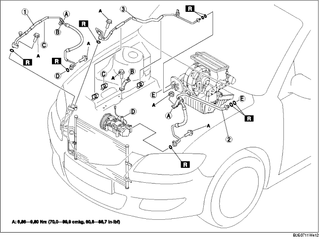

1. Das Massekabel der Batterie abklemmen.
2. Das Kältemittel aus dem System ablassen. (Siehe WIEDERVERWENDEN DES KÄLTEMITTELS.) (Siehe BEFÜLLEN MIT KÄLTEMITTEL.)
3. Den Ausgleichsbehälter für das Servolenkungsöl entfernen.
4. Den Kühlmittel-Ausgleichsbehälter ausbauen. (Siehe KÜHLMITTELAUSGLEICHSBEHÄLTER AUSBAUEN/EINBAUEN.)
5. Den Gaszug ausbauen.
6. Die Schlauchklemme für den Servolenkungsölschlauch entfernen.
7. Die untere Abdeckung ausbauen.
8. Gemäß der Reihenfolge in der Tabelle ausbauen. Sicherstellen, dass kein Kompressoröl herausspritzt.
9. Der Einbau erfolgt in umgekehrter Reihenfolge.
10. Die Prüfung der Klimaanlagenleistung ausführen. (Siehe KLIMAANLAGENLEISTUNG PRÜFEN.)

.
|
1
|
Verdampferschlauch (Hochdruck)
(Siehe Ausbauhinweis für Kältemittelleitung.)
(Siehe Einbauhinweis für Kältemittelleitung.)
|
|
2
|
Verdampferschlauch (Niederdruck)
(Siehe Ausbauhinweis für Kältemittelleitung.)
(Siehe Einbauhinweis für Kältemittelleitung.)
|
|
3
|
Kühlleitung
(Siehe Ausbauhinweis für Kältemittelleitung.)
(Siehe Einbauhinweis für Kältemittelleitung.)
|